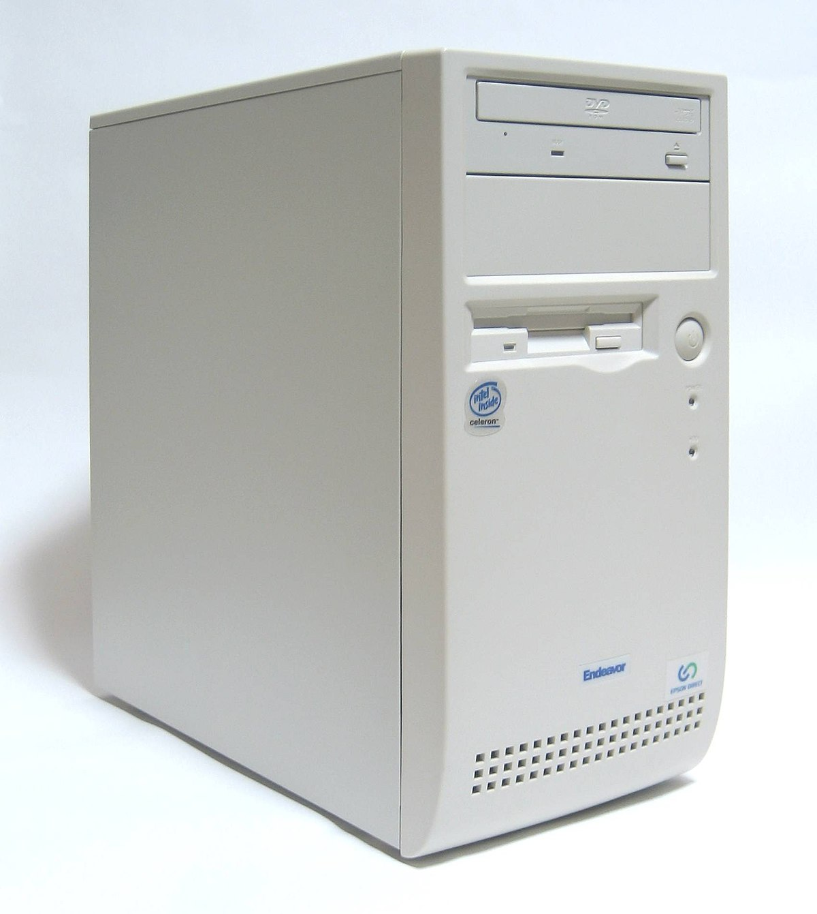

Personal Computer(A.K.A PC)

Ipsa scientia potestas est.
아는 것이 힘이다. - 프랜시스 베이컨
컴퓨터는 요즘 시대에 거의 필수적인 요소라고 하여도 과언이 아닙니다.
그렇다면 이 컴퓨터 안에는 어떤 부품들이 어떤 기능을 하고있을까요? 아래의 링크들을 통해 알아봅시다.
개요
CPU
MAINBOARD
RAM
HDD,SDD
GRAPHIC CARD